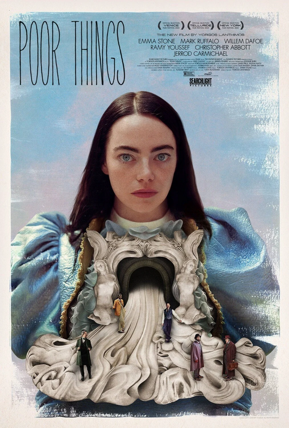
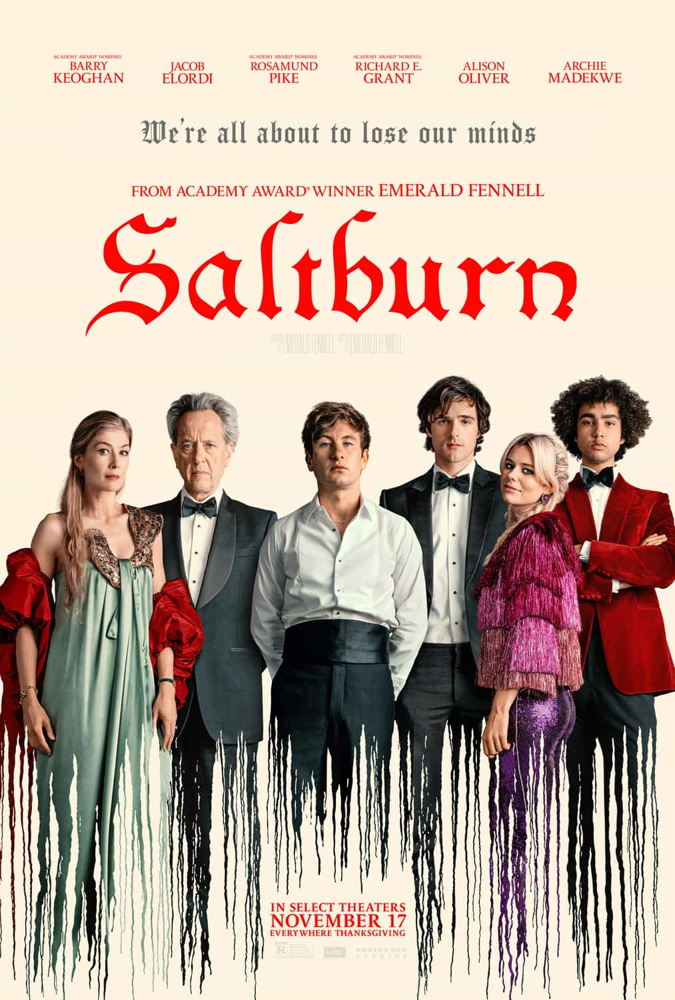

"Midsommar," directed by Ari Aster, is a haunting and visually stunning psychological horror film that plunges viewers into a nightmarish journey of grief and self-discovery. Following a grieving couple, played by Florence Pugh and Jack Reynor, as they join friends on a trip to a rural Swedish village for a rare midsummer festival, the film unfolds with eerie beauty and escalating tension. As the sun never sets in the idyllic commune, the boundaries between reality and hallucination blur, leading to a gripping exploration of the complexities of relationships and the darkness hidden beneath seemingly tranquil traditions. With Aster's meticulous direction and Pugh's compelling performance, "Midsommar" is a chilling and immersive cinematic experience that lingers in the mind long after the credits roll.

"Poor Things," helmed by visionary director Yorgos Lanthimos, promises to be a darkly comedic and thought-provoking exploration of societal norms. Adapted from the novel by Alasdair Gray, the film follows Bella Baxter, played by Emma Stone, a young woman brought back to life through a mad scientist's experiment. Set in Victorian Glasgow, the narrative weaves together elements of science fiction, social satire, and absurdity. Lanthimos, known for his distinctive style showcased in films like "The Lobster" and "The Favourite," is expected to deliver a surreal and visually striking experience. With a stellar cast and Lanthimos' penchant for subversive storytelling, "Poor Things" anticipates pushing boundaries and challenging conventional storytelling in a way that only this director can.

"Saltburn" features a fantastic cast of characters, including Rosamund Pike and Richard E. Grant on positively sparkling form as Felix’s parents, as well as Carey Mulligan as the hilarious Poor Dear Pamela; a family friend who appears to have been a visitor for quite some time. This is a beautifully wicked tale of privilege and desire not to be missed on the big screen. Oliver (Keoghan) doesn’t get off to a great start at Oxford University, with not a friend or party in sight. That is until he meets and becomes fast friends with the charismatic Felix (Elordi), who invites him to spend a Summer at his sprawling family estate. What awaits is a aristocratic paradise filled with eccentric characters, and a Summer never to be forgotten.